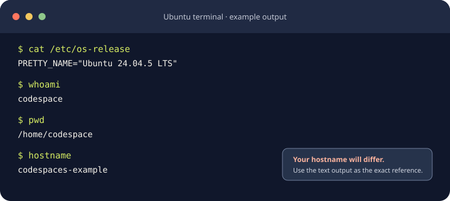

Meet Linux: your first class
About 2 hours. No cost, no experience and no powerful laptop. You will run a real Linux computer in your browser and take your first steps on it.
This is Class 1 of Linux for Beginners, part of the Coraxshift DevOps Academy. Do it at your own pace. If you enjoy it, the waitlist link at the bottom is how you join the full course.
👋 Welcome to your first class
Today you will open a real Linux computer in your browser, ask it who and where you are, check its health, and create your first files. By the end of this class the terminal will feel less like a mystery and more like a conversation.
By the end of this class you can:
- Open your terminal and recognise the prompt
- Check your Linux version, username, folder and computer name
- Check memory, disk and uptime
- Move between folders and create, copy, move and delete files
- Explain the main Linux folders (
/,/home,/etc,/var,/tmp)
Prerequisites
- A free GitHub account (create one here)
- A free blank Codespace: go to github.com/codespaces/new, choose the Blank template, and click Create codespace. Wait a minute or two for the editor to open in your browser.
- Nothing else. No Linux experience needed.
How every step works
Each step follows the same five parts, so you always know what is coming:
- Why this matters: one sentence and an everyday comparison
- Run it: commands to copy into the terminal (use the copy button on each box)
- What each command does
- What you should see: real output from our test lab, trimmed
- If yours looks different: the most likely reason and the fix
💡 Your output will never match ours character for character. Times, sizes, names and numbers change from computer to computer. Compare the meaning, not every letter.
Step 0: Open your terminal and go "home base"
Why this matters: every class starts from the same folder, so the commands work the same for everyone. Think of it as the classroom door: we all walk in through it.
In your Codespace, open the terminal (menu ☰ → Terminal → New Terminal, or press Ctrl + `). You will see a prompt, the line waiting for you to type. It looks something like this:
@your-github-name ➜ ~ $
Run it:
cd ~
What it does: cd means change directory. The ~ sign means your own home folder, so this moves you home. Directory is just another word for folder.
What you should see: nothing at all. In Linux, no message usually means success.
If yours looks different: the prompt may show a folder name instead of ~. That is fine. You are home either way.
Step 1: Ask Linux who and where you are
Why this matters: before you change anything on a server, you check which machine you are on and who you are logged in as. It's like checking the house number before you put your key in the door.
Run it:
cat /etc/os-release
whoami
pwd
hostname
What each command does:
| Command | What it does |
|---|---|
cat /etc/os-release |
Prints the file that describes your Linux version. cat shows a file's contents. |
whoami |
Prints your username |
pwd |
Prints your current folder (print working directory) |
hostname |
Prints the computer's name |
What you should see (trimmed):
PRETTY_NAME="Ubuntu 24.04.5 LTS"
NAME="Ubuntu"
VERSION_ID="24.04"
...
codespace
/home/codespace
codespaces-xxxxxx

If yours looks different:
- A different Ubuntu patch number (for example
24.04.3) or a different Ubuntu version is fine. Tell us (coraxshift@gmail.com) if it does not say Ubuntu at all. - Your hostname will be your own Codespace's name. That's expected.
- If
pwdshows a different folder, run Step 0 again.
Step 2: Check your server's health
Why this matters: memory and disk are a server's fuel and storage. If the disk fills up to 100%, logs stop being written and apps start failing. It's like checking the fuel gauge before a long drive.
Run it:
uptime
free -h
df -h /
What each command does:
| Command | What it does |
|---|---|
uptime |
How long the computer has been on, and its load average (how busy it has been over the last 1, 5 and 15 minutes) |
free -h |
Memory (RAM) in use and available. -h means human-readable (MB and GB instead of bytes). |
df -h / |
Disk space on the main drive. / means the main drive. |
What you should see:
23:16:19 up 1:02, 0 user, load average: 0.07, 0.02, 0.00
total used free shared buff/cache available
Mem: 1.9Gi 261Mi 371Mi 1.1Mi 1.5Gi 1.7Gi
Swap: 0B 0B 0B
Filesystem Size Used Avail Use% Mounted on
- 38G 7.8G 30G 22% /
The most useful column in free -h is available: memory programs can still use. The most useful column in df -h / is Use%.
If yours looks different:
- Your numbers will be different (a Codespace often has 8 GB of memory or more). That's fine.
Swap: 0Bis normal in a Codespace.- The
Filesystemname differs between computers (overlay,/dev/root,-and others are all fine). - If
Use%is above 90%, tell us (coraxshift@gmail.com) before installing anything.
Step 3: Move around and make folders
Why this matters: on a server you are always moving between folders: logs in one place, settings in another. ls, cd and pwd are your eyes, legs and map.
Run it one line at a time:
ls
ls -la
mkdir -p practice/lab
cd practice/lab
pwd
cd ../..
pwd
What each command does:
| Command | What it does |
|---|---|
ls |
Lists what is in the current folder |
ls -la |
Lists all files, including hidden ones that start with ., in long format (permissions, owner, size, date) |
mkdir -p practice/lab |
Makes a folder. -p also creates the parent folder (practice) if it doesn't exist, and doesn't complain if it already does. |
cd practice/lab |
Moves into the new folder |
cd ../.. |
Moves up two levels. .. always means the folder above me. |
What you should see (trimmed):
GETTING-STARTED.md README.md modules
total 16
drwxr-xr-x 4 codespace codespace 128 Nov 19 23:15 .
drwxr-xr-x 3 root root 60 Nov 19 23:15 ..
-rw-r--r-- 1 codespace codespace 9452 Nov 19 23:15 GETTING-STARTED.md
-rw-r--r-- 1 codespace codespace 2062 Nov 19 23:15 README.md
...
/home/codespace/practice/lab
/home/codespace
If yours looks different:
- You may see extra hidden entries like
.gitor.github. Those are normal. cd: practice/lab: No such file or directorymeansmkdirdidn't run or you were in another folder. Run Step 0, then this step again.- Lost?
cd ~always brings you back home.
Step 4: Tour the Linux file system
Why this matters: every Linux server uses the same layout. Once you know it, you can find settings and logs on any server in the world, like knowing every supermarket keeps milk at the back.
Run it:
ls /
ls /home
ls /var
What each command does: each ls lists one important folder. A path starting with / is an absolute path: it starts from the very top.
What you should see (trimmed):
bin boot etc lib media opt root sbin srv tmp var
bin.usr-is-merged dev home lib64 mnt proc run sbin.usr-is-merged sys usr workspaces
codespace
backups cache lib local lock log mail opt run spool tmp
The folders that matter most:
| Folder | What lives there | Analogy |
|---|---|---|
/ |
The root: the top of everything | The front door of the building |
/home |
Users' personal folders (yours is /home/codespace) |
Each person's bedroom |
/etc |
Settings (configuration) files, for example Nginx's settings in /etc/nginx |
The building's rule book |
/var |
Things that change: logs in /var/log, websites in /var/www |
The post room and noticeboard |
/tmp |
Temporary files that may be cleared | A scratch pad |
If yours looks different:
- A slightly different list is fine. Codespaces add their own folders.
- There is no
/var/wwwyet. It appears in Class 2 when you install the Nginx web server.
Step 5: Create, read, copy, move and delete a file
Why this matters: these five actions are the bread and butter of every server task, from editing a config to rotating a log.
Run it:
echo "Hello Coraxshift" > practice/lab/hello.txt
cat practice/lab/hello.txt
cp practice/lab/hello.txt practice/lab/hello-copy.txt
mv practice/lab/hello-copy.txt practice/lab/hello-moved.txt
ls practice/lab/
rm practice/lab/hello-moved.txt
ls practice/lab/
What each command does:
| Command | What it does |
|---|---|
echo "..." > file |
Writes text into a file. > means send into this file and replaces what was there. |
cat file |
Shows the file's contents |
cp a b |
Copies a to b |
mv a b |
Moves or renames a to b |
rm file |
Deletes the file. There is no recycle bin in Linux. |
What you should see:
Hello Coraxshift
hello-moved.txt hello.txt
hello.txt
If yours looks different:
No such file or directory: you are probably not in the course folder. Run Step 0.- Be careful with
rm. Always read the file name twice before pressing Enter. In this course we prefer moving files aside over deleting them.
✅ Recap
- The terminal is a conversation: you type a command, Linux answers. No answer usually means success.
whoami,pwd,hostnameandcat /etc/os-releasetell you who and where you are.uptime,free -handdf -h /are your server's health gauges.ls,cd,mkdir,cp,mv,rmandcatare your everyday tools./etcholds settings,/var/logholds logs,/homeholds users.
🎉 That was Class 1. Want the rest?
The full Linux for Beginners course continues with permissions, users, processes, networking and your first script. You then deploy a real game on the web, monitor it, break it on purpose and fix it, and earn your badge. Founding members get pricing and the start date first.